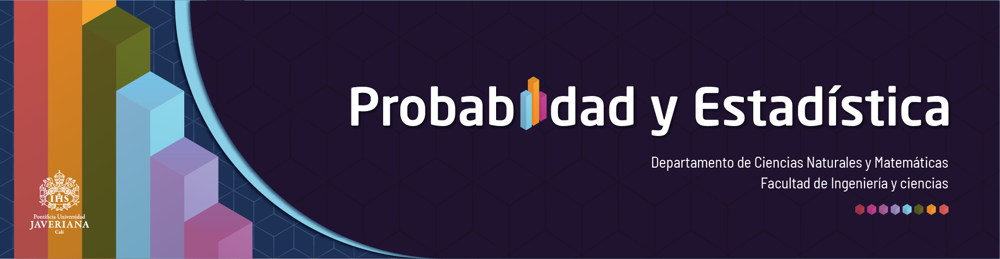

Los estudiantes deberán realizar un proyecto que les permita poner en práctica los conocimientos adquiridos en el curso de Probabilidad y Estadística.
Contribuir a la formación integral, al trabajo en equipo y la interrelación de conocimientos de Estadística alrededor de un problema específico.
Permitir los estudiantes detectar situaciones en las cuales pueda aplicar las técnicas Estadísticas estudiadas.
Desarrollar destrezas en el análisis estadístico y la presentación de informes estadísticos.
En equipos de cuatro estudiantes deberán desarrollar un trabajo que corresponda a un problema de interés para el grupo, que permita la aplicación de la Estadística en un tema específico.
El producto de este trabajo deberá ser entregado en un poster en formato pdf junto con un video donde se realice su presentación por los integrantes del grupo.
Equipos conformados por cuatro estudiantes. No se permiten trabajos individuales.
Seleccionar un problema de interés propio para el grupo que permita la aplicación de los conocimientos de estadística vistos en el curso. El tema propuesto deberá contar con el visto bueno del profesor.
El contenido del poster deberá utilizar por lo menos 6 resultados producto de la inferencia estadística (intervalos de confianza o pruebas de hipótesis) que respalden los resultados presentados
Al final los estudiantes deberán realizar una presentación del trabajo y de los principales hallazgos. Cada grupo contará con un tiempo de 5 minutos para la presentación de los resultados.
Contenido del poster
Entrega de informe parcial
Fecha : octubre 7 de 2022 Hora : 23.59
Entrega del informe final y video:
Fecha: noviembre 18 2022
Hora : 23:59
El trabajo será socializado en la página del curso
Nota: se debe especificar en donde y en que periodo de tiempo se realiza el proyecto
Nota: se debe especificar cúal es el problema, en que espacio y
tiempo se realiza el proyecto
Nota: Se debe especificar cúal es el problema, espacio y tiempo en que se realiza el proyecto
Nota: Se debe especificar el espacio y tiempo en que se realiza el
proyecto
Nota: Se debe especificar cúal es el problema, espacio y tiempo en que se realiza el proyecto
Nota: Se debe especificar cúal es el problema, espacio y tiempo en
que se realiza el proyecto
Nota: Se debe especificar cúal es el problema, espacio y tiempo en que se realiza el proyecto
Nota: Se debe especificar el espacio y tiempo en que se realiza el proyecto
Nota: Se debe indicar el periodo de tiempo en que se realiza el proyecto